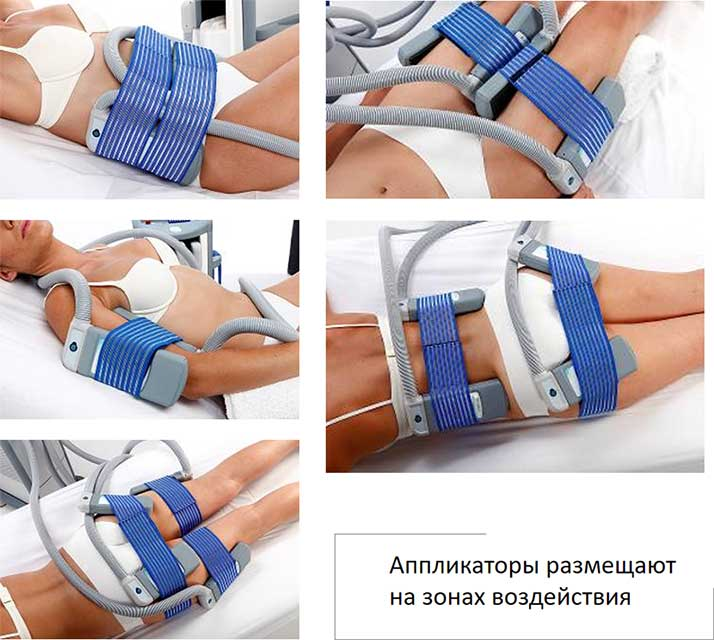

Криолиполиз
 Криолиполиз – инновационная методика воздействия на подкожно-жировую клетчатку с целью коррекции фигуры и терапии целлюлита. Процедура заключается в воздействии холодом на зону локальных жировых отложений, чтобы безболезненно и эффективно расщеплять жировые клетки для получения долговременного результата.
Криолиполиз – инновационная методика воздействия на подкожно-жировую клетчатку с целью коррекции фигуры и терапии целлюлита. Процедура заключается в воздействии холодом на зону локальных жировых отложений, чтобы безболезненно и эффективно расщеплять жировые клетки для получения долговременного результата.
Методика избирательно воздействует холодом (до – 10С) на проблемные зоны. Под воздействием температурного режима жировые клетки начинают погибать, и полностью выводятся из организма естественным путем через 3-4 недели после процедуры. Как результат – заметное уменьшение объемов и улучшение структуры кожи!
Криолиполиз в L.R. CLINIC – способ создания идеальных форм с высокой эффективностью, безопасностью и пролонгированным действием.
- Время процедуры 30-60 минут
- Абсолютно безболезненно
- Нет реабилитации
- Курс 3 - 5 процедур
- Стоимость процедуры от 4500 руб.
Показания
-
Локальные жировые отложения, провисшая кожа, целлюлит в следующих зонах:
- Живот
- Бока
- Спина
- Зона галифе (внешняя поверхность бедра)
- Внутренняя поверхность бедра
- Ягодицы
- Руки
- Надколенная зона
"L.R. CLINIC" – только лучшее оборудование, имеющее сертификаты качества и Регистрационное удостоверение Министерства здравоохранения РФ.
CRY-O от SORISA - современный аппарат, который поддерживает и контролирует температуру и глубину воздействия, поэтому процедура криолиполиза в нашей клинике максимально безопасна.
Процедура

Перед процедурой проводится консультация с врачом по процедуре, определяется зона воздействия. Далее обрабатываемая зона замеряется при помощи специального инструмента – калипера. Проблемную зону (бедра, живот, внутренняя часть рук и т.д.) покрывают салфеткой с раствором от переохлаждения кожи. На зонах воздействия размещают аппликаторы, задаются параметры. Время воздействия может меняться от 30 до 60 минут в зависимости от толщины жировой складки в обрабатываемой зоне. Процедура безболезненная, сопровождается лишь небольшим дискомфортом в охлаждаемой зоне.
Температура снижается постепенно до -5С, в результате чего запускается процесс гибели жировых клеток без причинения вреда окружающим тканям. Метаболические процессы физиологически выводят разрушенные клетки, без токсичности для организма и воспалительных последствий.
Процесс разрушения продлевается до трех месяцев, это позволяет избежать растяжек и провисания, кожа успевает адаптироваться к изменению и снижению объемов.
Преимущества
- Стойкий и выраженный результат даже после единственной процедуры.
- Уменьшение жировой складки на 25-40% уже через 4 недели после одного сеанса;
- Абсолютная безопасность. Криолиполиз оказывает воздействие исключительно на клетки жира. Холодовое повреждение кожи, сосудов, нервов, мышц или внутренних органов исключается. Уровень холестерина в крови остается в норме.
- Одобрен FDA (Ассоциация безопасности, США) для удаления жировых отложений.
- Безболезненность.
- Эффективность. Результаты криолиполиза сравнимы с хирургической липосакцией.
- Устойчивость. При сохранении двигательной активности, гормонального баланса и отсутствия перекосов в диете, результат сохраняется на всю жизнь.
- Естественный результат, который проявляется постепенно и нарастает со временем. Эффект от криолиполиза нарастает в течение 2-4 месяцев. Никто не заподозрит вас в использовании вспомогательных средств.
- Доступность. Всего за несколько тысяч рублей вы получаете сопоставимый с липосакцией результат, на достижение которого раньше требовались десятки тысяч.
- Без реабилитации. Нет гематом и провисшей кожи. Процедура сочетается с повседневными делами. Ограничения после процедуры минимальные. Сразу после посещения клиники вы можете отправляться хоть на свидание. Максимум, что будет заметно – небольшое покраснение в области обработки.
- Точное воздействие. Аппарат воздействует в конкретных проблемных местах, позволяя сохранить привлекательность форм в области груди, ягодицах и т.д.
- Отличие аппарата CRY-O от большинства других методов криотерапии, представленных на рынке, заключается в том, что эта терапия осуществляется в сочетании с циклами вибрационного массажа, что повышает комфорт во время процедуры и дает заметно лучшие результаты.
- Механический эффект от вибрации стимулирует циркуляцию крови и лимфодренаж в зонах воздействия, способствуя повышению мышечного тонуса и выведению токсинов из организма, создавая комфортные ощущения. Методику полюбили за быстрый и гарантированный результат – с помощью холода вы становитесь стройнее до 3 размеров.
Рекомендации до и после процедуры криолиполиза:
До процедуры:
Процедура безвредна, специальной подготовки не требует. Рекомендуется за 2 – 3 дня до нее увеличить потребление воды до 3 литров воды, для запуска лимфы.
После процедуры:
После контактного криолиполиза можно вести обычный образ жизни. Однако, в течение 3 дней после процедуры необходимо ограничить себя от тепловых процедур (бани, сауны, солярий). Придерживаться “нормокалорийного” питания и соблюдать питьевой режим (как минимум 1,5 литров воды в день).
Если целью является существенное уменьшение объемов и коррекция фигуры, следует придерживаться диетического питания.
Противопоказания
- Беременность и кормление грудью
- Повышенная чувствительность к холоду
- Диабет, новообразования
- Открытые раны, недавние рубцы в зоне воздействия
- Подкожно жировая складка менее 2см
Сочетание криолипосакции c процедурами
- Бандажное T-shock обертывание
- Мезотерапия тела
- LPG-массаж
В результате комплексной работы по всему телу дает максимально быстрый и стойкий эффект!
Квалифицированные специалисты L.R.Clinic вернут вашему лицу молодость и красоту.
Специалисты по криолиполизу


Стоимость
| Наименование услуги | Цена руб. |
|---|---|
| Криолиполиз 1 манипула | 4 300 |
| Криолиполиз 2 манипулы | 6 800 |
| Криолиполиз 4 манипулы | 11 800 |